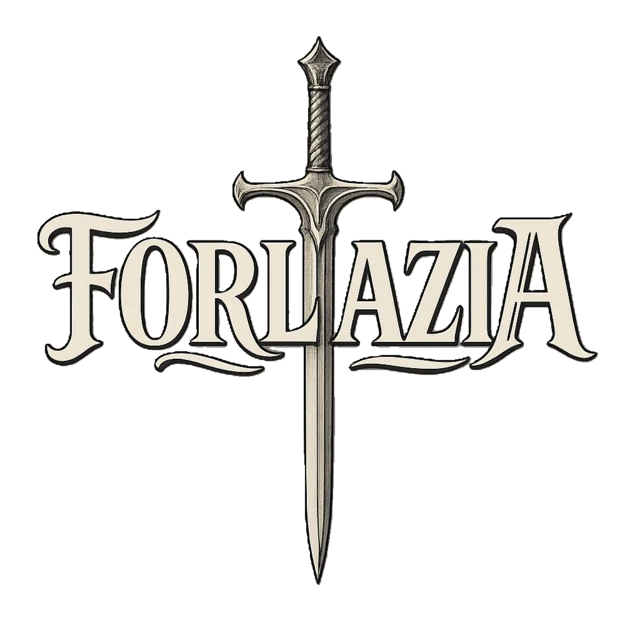

Welcome Beyond the Veil
A world awakened beneath a wounded sky.
Forlazia is a realm shaped by mortal memory, divine struggle, and the unstable current of the Aether. Here, forgotten gods wait beneath ruined temples, ancient roads vanish into wild country, and the Veil between worlds has begun to stir.

A Living Mythology
Every prayer, ruin, and death has weight.
The gods of Forlazia are sustained by belief. Soul Essence is divided between the divine and mortal worlds. Magic flows through a single vast current, yet every tradition bends it differently. What mortals remember can preserve a god—and what they forget can bury one.
The World
Explore the ages, cultures, settlements, wild frontiers, ancient ruins, and growing tensions of the Age of the Veilwake.
The Veilborn Pantheon
Discover seven divine powers whose rivalries shape justice, nature, fate, war, death, and corruption.
Aether & Soul Essence
Learn how divine, arcane, natural, and cosmic magic emerge from the same unstable current.
The Peoples
Meet humans, elves, dwarves, halflings, Sylira, and Ravak—and the histories they carry into the new age.
Paths of Power
Read about warriors, leaders, mystics, scholars, hunters, and wielders of the Aether who shape the world around them.
The World Journal
Follow new lore, places, peoples, faiths, creatures, and stories as Forlazia continues to grow.
The Current Age
The Age of the Veilwake
For generations, the Veil was accepted as part of the world: a shimmering boundary born from the death of the old gods. Now it is waking. Shards fall from impossible skies. Subtle fractures open in forgotten places. Dreams carry voices that do not belong to the dreamer.
Kingdoms, cults, scholars, and wanderers all sense the same truth: the long stillness is ending, and whoever understands the Veil may determine the next age of Forlazia.
Read about the Veilwake →